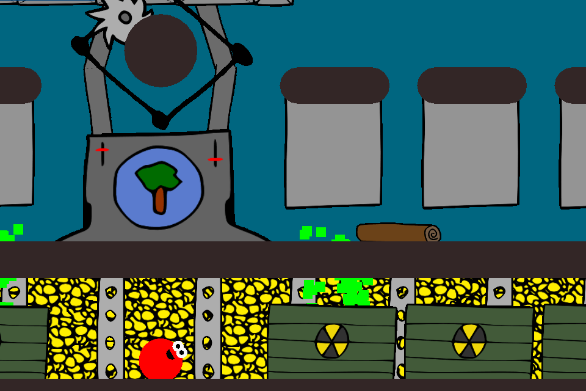

Bovinedragon Software's second game, Gomi, was launched in 2009. The goal was to create a hybrid of our engineer's three favorite games at the time: We <3 Katamari, Mario Galaxy, and Loco Roco. It was the most complex game we had ever made at that point and it included a lot of rarely reused content. To lighten the workload we were able to find ways to create game content quickly without compromising quality.
The largest timesink for creating a Gomi level was object placement. Each level needed all its' open space packed with a couple hundred objects for the player to eat, and ideally they would all make sense in context as well.
We <3 Katamari often accomplished this by arranging their objects into logical groups. These could take the form of geometrical shapes, paths for the player to follow, or small setpieces that told a story. We decided to adopt the storytelling approach for Gomi although our usage of it was more for depicting real-world situations instead of comedic effect.
Because of our focus on stories we were able to take advantage of efficiency through batch design. We didn't need to spend time coming up with a new creative idea for hundreds of objects in each level because we weren't placing objects, we were placing stories that included a group of objects. These stories also existed at multiple scopes of design, from a small corner of one platform to an entire game world, and most of the time these scopes would all be in play at once. Here's how this worked in action:
The majority of our object placement decisions were made by filling the levels with our small stories that would usually fit on half a screen. These would be stories like, 'An ice cream cart has a long line of customers', or 'Some scouts are building a giant flagpole monument'. A few more objects were placed as standalones to fill in any small open spaces between stories.
At the next higher scope, each level as a whole was a unique setting communicated through objects. In World 1 (internally named: Metropolis), Stage 1-1 was a city park, 1-2 was a burnt-out industrial area with lots of traffic, 1-3 was a Walmart parking lot, and 1-4 was a picket-fence suburb. This dictated what kind of stories we could tell in each level to best communicate the setting. Our settings wouldn't be accurately portrayed if we had the 'Worker collecting shopping carts from a parking lot' story in the suburb level.
For variety, a few levels told stories on a larger scope instead of providing a setting. 4-3 was a giant 'Red vs Blue' team beachball battle. 5-3 was a linear jungle level featuring a logging conveyor belt, and a punchline where the humans were logging a log cabin. Object placement in these levels was lighter on individual stories / points of interest in order to keep the focus on the level itself.
At the largest scope we had special treatment given to final world in the game, World 8 (Gomi Homeworld). This world told a story using all four levels in sequence and not just through use of objects. In addition to changing the setting we threw in new surprises on a level-by-level basis in ways that the rest of the game hadn't done before. World 8 gradually changed its water colors, increased pollution levels, removed humans halfway through, used multiple background music tracks, featured new genres of music, and ended with a fully linear 'walking simulator' level that also deactivated the player's signature ability to eat objects. The narrative created by this all led up to the final boss battle and the end of the game.
To sum up, designing stories instead of objects automatically guided our decisions at any scopes below the one we were working at. The most useful effect of this was removing the most granular and potentially most time-consuming level of detail from the level creation process.
Our next time-saver was building most of our new content from existing lore. This meant that as soon as our playable demo was ready we began to think of the game as a universe that we could write fanfiction for. This mindset ended up being perfect for creating new ideas and potential plotpoints and it felt much faster than if we had planned everything out before starting development. When it comes to the player, they didn't need to be made aware of any worldbuilding unless we wanted to make a part of it 'official'. This was just a personal technique for creating content. Most significantly, this was where Gomi's main storyline came from.
It started out with the early game mechanics design stage. We wanted a game where our friendly round blob character would roll around and eat up objects. We knew early on that we didn't want to completely ripoff the random wackiness in We <3 Katamari's object placement so we started out by creating a demo area that was a generic suburb where our character would roll up fairly realistic city objects. Some of these objects were discarded trash bags, cars, and helium party balloons, and the gameplay began to feel less like rolling up random objects and more like cleaning up trash. From there we found our first step - the game's theme would be environmentalism.
While our second demo world began to take shape we discovered the next step towards the final storyline. This world had a set of themed objects representing a fictional corporation called 'Tree Co'. As with most of the game's lore the name was just used internally to fuel the creative process; the player only saw the company logo and their actions. The name 'Tree Co.' was meant to be a reference to the grass starter pokemon, Treecko, and secondarily as a symbol of corporate hypocrisy. It was similar to how British Petroleum (responsible for the Deepwater Horizon oil spill a few years later) used a green flower for their company logo in the real world. As time went on we expanded on the idea and Tree Co. became featured in about half the game, and Gomi's main antagonists.
The other significant idea was the rubber ducks that started out in World 3 (Baby Seals). There was something comedic about the way they looked in large quantities so we included huge piles of them for fun and looked for opportunities to use the ducks in other worlds. We found one in World 7 (Factory) which at the time still needed its details planned out.
At this point we now had two good ideas that could become repeated themes and fill in World 7's missing plot points: Tree Co. would operate the factory, and rubber duck production would be the reason it existed. When the storyline had further solidified a few months later we decided to make it a little more obvious for the player by showing them the actual factory process during that worlds' boss battle.
With everything now in place, here's a summary of the final storyline from the beginning where our best worldbuilding ideas became a finished product:
In the Gomi universe there was a company called 'Tree Co.'. Part of their business involved harvesting lumber in World 5 (Rainforest), which was transported through World 6 (Moon) to World 7 (Factory) for processing. At the Tree Co. factory, the lumber was converted to rubber ducks via mad science and the unnatural wood-to-plastic conversion created toxic waste as a byproduct. The rubber ducks were then distributed to vendors across the star system. Part of that supply chain was an oil tanker carrying a side shipment of rubber ducks, which crashed in World 3 (Baby Seals) and badly polluted the area.
Meanwhile, the waste byproduct was being shipped to landfills on World 8 (Gomi Homeworld). The waste dried up the natural plant life and shortly after the player arrives the level of pollution goes completely out of control. All of Tree Co.'s human workers abandon the facility in 8-3, and by 8-4 the waste and machinery had become an uncontrollable sentient colossus that served as the game's final boss. At the end of the fight the player's character transformed into a Rainbow Gomi / Super Saiyan / Gold Sonic (rule of cool) and destroyed the colossus, leading to the rebirth of World 8 and roll credits.
Overall, the process of expanding upon our own best ideas saved us planning time by creating our storyline's broad details and recurring themes automatically as development proceeded.
Although it may be an obvious concept I want to also cover one of my favorite creative techniques that Gomi's storyline process had been partially derived from, just in case it might be useful to someone. The idea is to always have two separate workflows operating at any given time: conscious and unconscious. Conscious work is something that requires manual effort to complete, and unconscious work is something that can be processed automatically in the background of your mind.
For example, let's say a developer has ten design decisions to make. They put in a lot of effort and slowly begin to complete their checklist. Then after work one night an idea pops into their head: they suddenly know exactly what to do for decision #9 and now they don't have to spend any time working on it. By arranging a schedule to always have a few significant but non-urgent decisions on the horizon, it's possible to complete many of them with zero manhours.
In our situation we used a variation of this for Gomi's main storyline. Rather than consciously write it from scratch we let the story evolve naturally and encouraged the best ideas to spread while creating other game content that we needed to create anyway. And by the time we needed to develop content related to the main storyline, it had written itself in the background without any significant time investment. This technique was also used for the storyline of our next game, Trace 2.